I decided to unite all my projects that I did when I studied at school in one article, because there was too little information left to describe each of them separately. In addition, in this article I wanted to test a little about my hobbies while one whole story.
In school, I spent a good portion of my time working on my projects.
I have been interested in electronics and invention since my childhood. My parents got me a electronics exploration kit for my birthday in very young age. I also was a member of a robotics team from 5 to 7 grades at school. I have even won several local competition in robotics.
As a child, I was more interested in experimenting with high voltage than in circuitry. Probably because they were visual and exciting. I made and play with many cool things, such as a coilgun with which I won local physics olympiad, a Tesla coil, a high voltage power supply and even an X-Ray machine that needed this high voltage power supply in order for the X-ray tube to work. I often went to the radio components shops or searched for rare parts on electronic bulletin board.
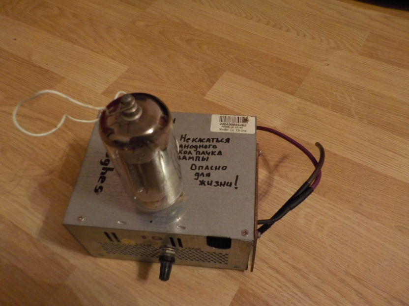
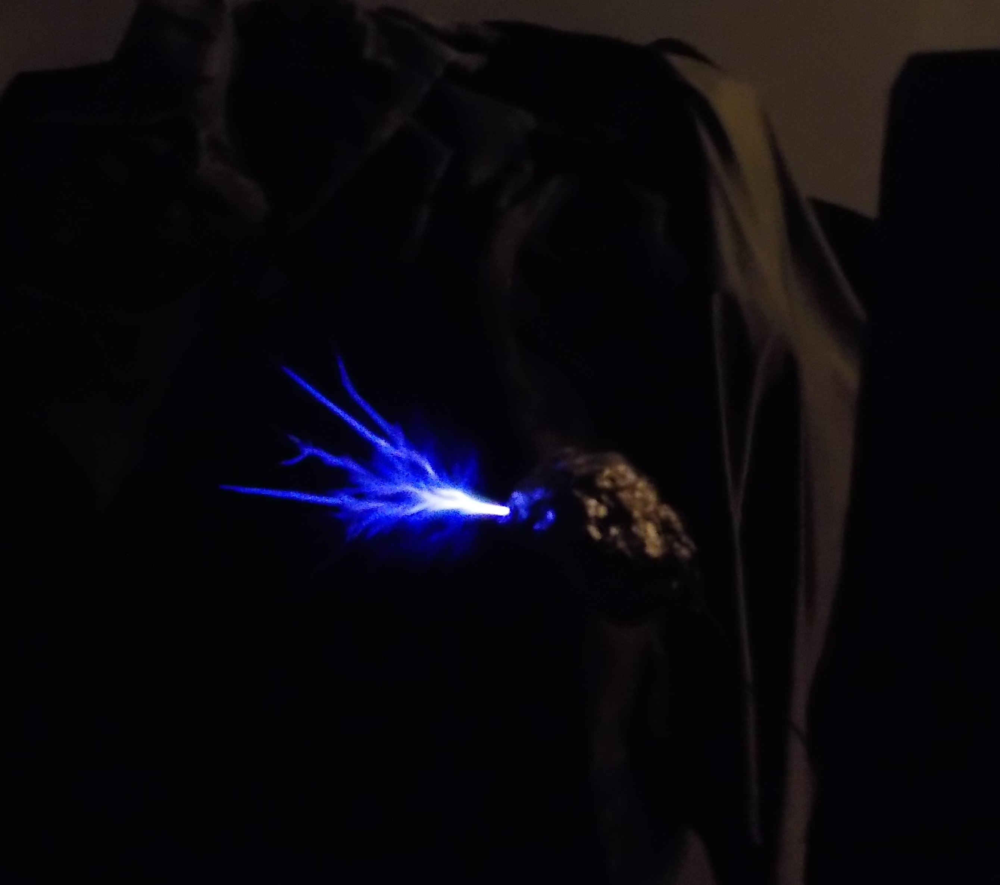
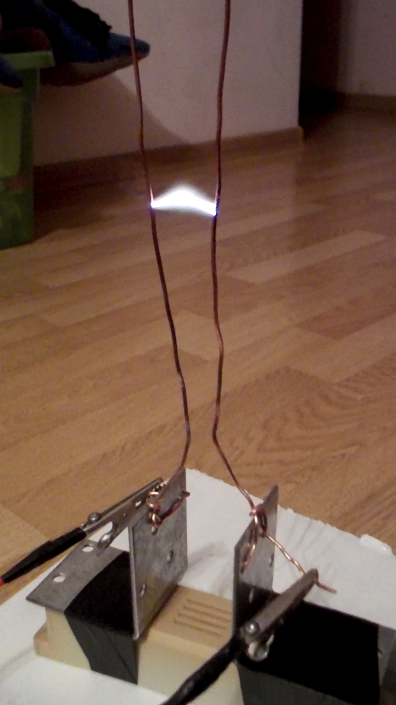
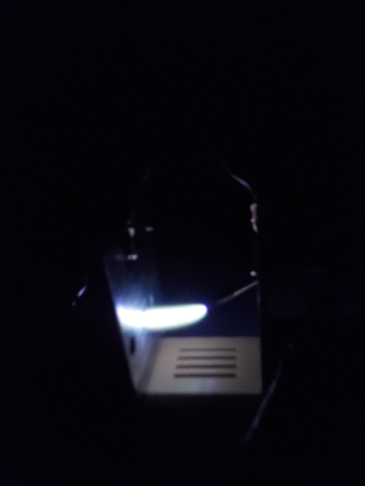
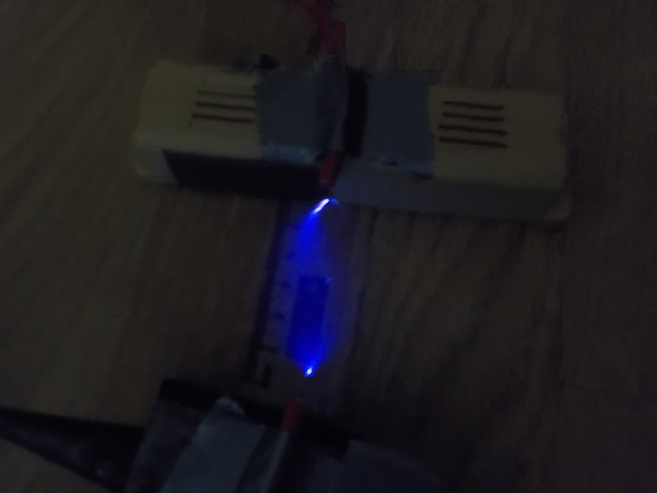
My first successful commercial project was a night vision device. The idea was to connect the IR camera and eyepiece extracted from old analog video camera. The most complicated thing in this project was figure out right pins on the eyepiece's board to connect IR camera. That’s when I realized the importance datasheets. The customer was my older friend who played airsoft. Some time later, I did two more devices and sold them. At the time I was only fifteen years old.
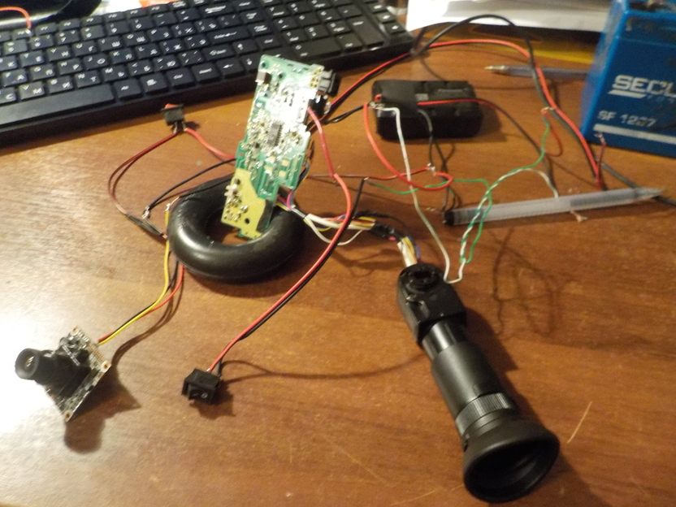
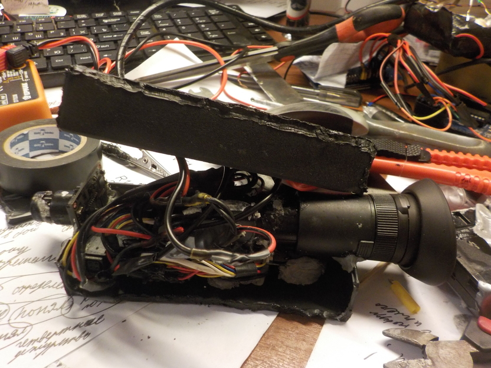
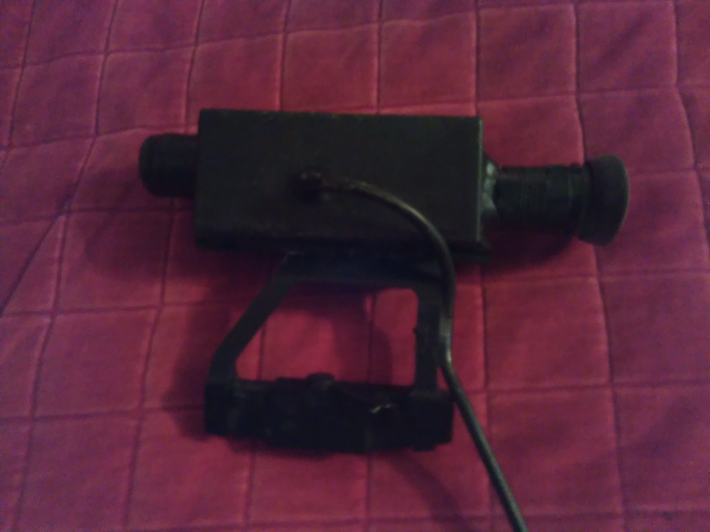
A year later, I made another significant project for me. It was wearable computer. I have long been thinking about it. I decided to use Arduino for this project. The only problem with that was I couldn't program at the time. Fortunately, I had older pen-friend from another city who is good at system programming. I discussed my idea with him and made a technical specifications for the firmware. It wasn't so official. I just wrote down a detailed walk-through of every push of button. What happens when somebody click it? Exactly what did the system do? What happens next? When the firmware was done, I paid him (thanks to my mom, who supported and financed all my ideas). I spent the whole April 2016 connecting components with each other as much compact as possible.
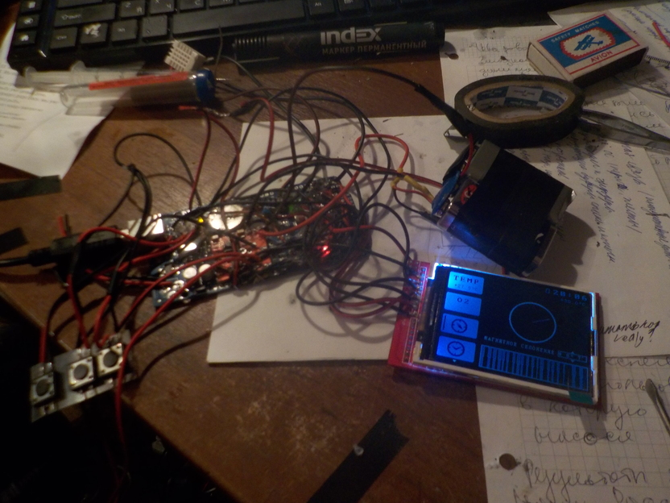
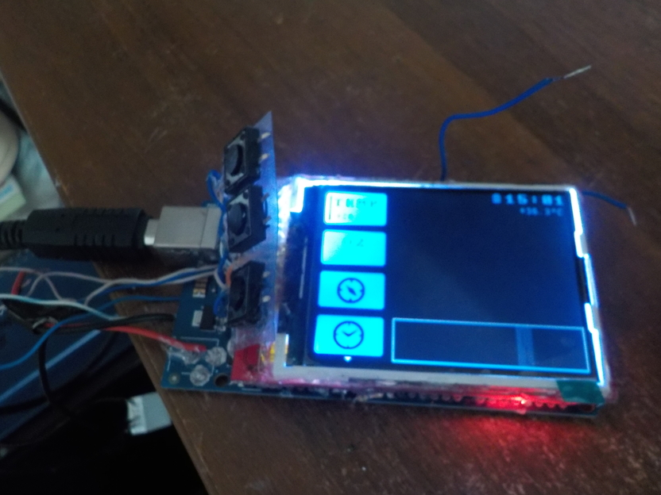
The result wasn't as cool as I expected. There were some problems with performance and eventually, I bought Garmin Foretrex 401. However, I think this project is valuable for me because I learnt a lot from it. Firstly, I learnt how to hire a programmer. Of course, I was lucky and I found programmer with necessary skills and huge amount of patience and motivation on the first try. Secondly, I learnt how to express my ideas in clear way. This is very important when you do projects not alone. And, of course, I completed complex project (I think it is) and make my ideas happen. This is what lights me up and gives me energy to move forward.
From a very young age, I've been thrilled about bionic technology. I was a big fun of computer games such as Bionic Commando, Deus Ex: Human Revolution and Call of Duty Advanced Warfare.
I made a lot of attempts to create exoskeleton. Of course, all of them were naive.
One day I decided to make another one by creating a lower part of exoskeleton for legs. Its was made from shaped pipes, to which linear actuators were attached. The operator commands were read using EMG sensors attached to the muscles. The signal processing and control block was implemented using arduino. Now it seems not very difficult, but then it was a big step forward for me.
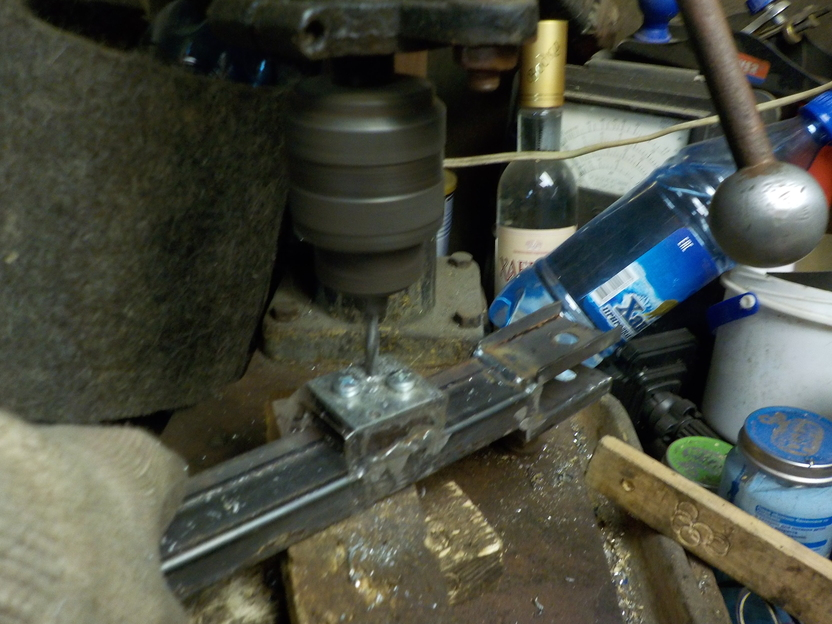
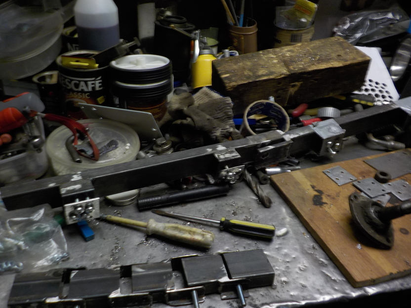
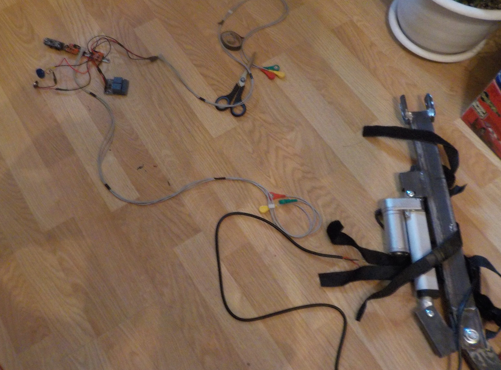
The another project was a bionic arm prosthesis. I decided to made it for my physical education teacher. The project used a 3D printed robot arm from the InMoov project. It is an open-source life sized robot with advanced human-like features. The arm has been modified to be used in conjunction with a socket for arm. The servo drives were replaced with a hydraulic system and the pistons were mounted externally. I used Arduino to control arm movement and gather data from the EMG sensors.
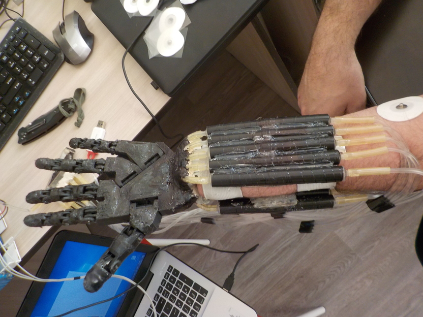
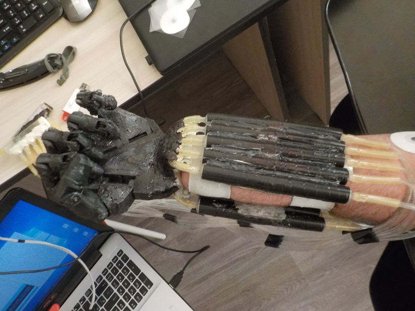
To sum up, these projects taught me the importance of perseverance, curiosity, and the value of learning from failure. While I'm proud of what I've accomplished so far, I'm excited about what lies ahead.